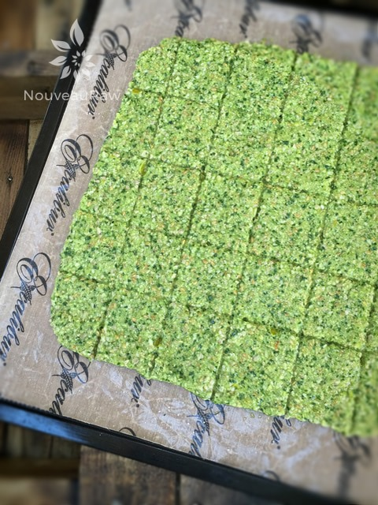

Arugula and Sunflower Seed Crackers
~ raw, vegan, gluten-free, nut-free ~
Arugula’s deliciously pungent flavor may come as a surprise if you’ve never tasted it. It is characterized as having a “peppery-mustardy” flavor. If you are familiar with arugula, then it’s likely you know how much depth and interest that it can bring to a salad.
If you find yourself standing in the produce section, presented with baby arugula and regular arugula, you may be wondering what the difference is.
Baby arugula is a young leaf that is mild and tender. The leaves are a lighter shade of green and don’t yet have the pronounced flavors of mature arugula. It is perfect for salads and a great way to introduce yourself to this wonderful green leaf. More mature arugula will be a darker shade of green, and the darker the green, the stronger the flavor.
A few weeks ago I popped into the grocery store to buy some spinach for my morning smoothies. I darted in and darted out. The next morning I prepared my smoothie. I piled in all my goodies and then stuffed the blender carafe with spinach. I hit the “smoothie” button and patiently waited for my breakfast.
Once ready, I poured it into my favorite jar and snuggled up on the couch with Bob. As we were chatting away and I was sipping my drink, inwardly I thought to myself, “Hmm, there is a bite to my smoothie. How odd.” I finally mentioned it to Bob because the flavor was getting stronger and stronger.
Regardless, I finished my smoothie and wiped the green mustache away from my upper lip. Later that day as I was rummaging through the fridge, I went to grab the spinach… it was then that I noticed that it wasn’t spinach! It was arugula! lol Oy-vey! That explains my smoothie. I can’t say that I would purposely do that again but it made for a funny memory.
As I was preparing this cracker I wanted to really showcase the peppery notes. So, to elevate them, I added black pepper and a few other spices. There is no doubt that arugula is a “green” tasting leaf and I didn’t want to hide that, it deserves to be the star of the recipe. The additional flavors of the olive oil and sunflower seeds really help to ground that earthy taste. This cracker is packed full of flavor and great nutrients. So, don’t wrinkle your nose, be adventurous, and give it a try. You just might find a great new way to get more greens into you!
P.S. See the bowl in the photo? I created that on a lathe machine out of a big square block of wood. It was one of my first ones.
Yields 2 (16×16″) trays
- 4 cups packed arugula
- 4 cups (2 large) zucchini, peeled & diced
- 1 cup diced yellow bell pepper
- 1/2 cup raw sunflower seeds, soaked
- 1/2 cup ground flax seeds
- 1/2 cup flax seeds
- 1/4 cup white sesame seeds
- 2 Tbsp cold-pressed olive oil
- 2 garlic cloves
- 2 Tbsp lemon juice
- 2 tsp onion powder
- 1 1/2 tsp Himalayan pink salt
- 1 tsp ground black pepper
Preparation:
- In the food processor bowl, place the arugula in the bottom of the bowl, then follow with; the chopped zucchini, yellow pepper, sesame seeds, sunflower seeds, ground flax, while flax, olive oil, garlic, sesame seeds, lemon juice, onion powder, salt, and pepper. Pulse together until everything is combined.
- By putting the arugula in first, the weight of the zucchini will help hold the arugula down and make it easy to process.
- Pulsing helps to draw the ingredients into the blades preventing them from being over-processed.
- Set aside for 10+ minutes so the flax seeds can thicken everything up.
- Spread half of the batter on the teflex non-stick sheets that comes with the dehydrator.
- Square up the edges and score into cracker shapes.
- Sprinkle coarse sea salt on top.
- Dehydrate for 1 hour at 145 degrees (F), then reduce to 115 degrees for roughly 8 hours.
- Remove the trays and flip the crackers over onto the mesh sheet partway through the drying time. Peel off the non-stick sheet. This will help speed up the dry time by allowing the air to better circulate around the crackers.
- Allow the crackers to cool to room temperature, snap the crackers into pieces, and store them in an airtight container.
- Crackers should keep for a few weeks in a sealed container.
Culinary Explanations:
- Why do I start the dehydrator at 145 degrees (F)? Click (here) to learn the reason behind this.
- When working with fresh ingredients it is important to taste test as you build a recipe. Learn why (here).
- Don’t own a dehydrator? Learn how to use your oven (here). I do however truly believe that it is a worthwhile investment. Click (here) to learn what I use.

Spread the cracker batter out to roughly 1/4″ thick. Score into the shape and size you want, then slide into the dehydrator.
© AmieSue.com